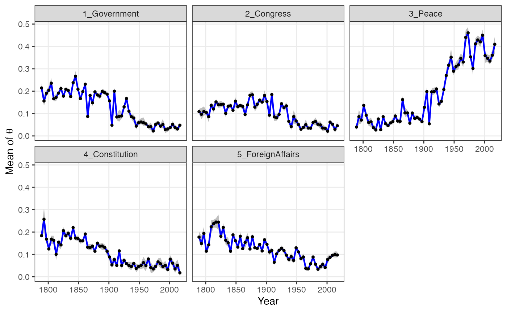

Researchers are often interested in investigating how the prevalence of topics change over time. The keyATM can use time stamps for the prior for document-topic distribution through Hidden Markov Model (Chib 1998).
Section 4 of Eshima et al. (2023) explains the dynamic keyATM in details. As explained in keyATM Covariates, we recommend researchers to construct a numeric or an integer vector of time stamps after preprocessing texts.
Preparing time index
Please read Preparation for the reading of documents and creating a list of keywords.
We use the US Presidential inaugural address data we prapared (documents and keywords).
## Year President FirstName Party
## 1 1789 Washington George none
## 2 1793 Washington George none
## 3 1797 Adams John Federalist
## 4 1801 Jefferson Thomas Democratic-Republican
## 5 1805 Jefferson Thomas Democratic-Republican
## 6 1809 Madison James Democratic-Republican
# Divide by a decade
# Timestamp should start with 1 (the variable "Period")
vars %>%
as_tibble() %>%
mutate(Period = (vars$Year - 1780) %/% 10 + 1) -> vars_period
vars_period %>% select(Year, Period)## # A tibble: 58 × 2
## Year Period
## <int> <dbl>
## 1 1789 1
## 2 1793 2
## 3 1797 2
## 4 1801 3
## 5 1805 3
## 6 1809 3
## 7 1813 4
## 8 1817 4
## 9 1821 5
## 10 1825 5
## # ℹ 48 more rowsThe time index (Period) should start from 1
and increment by 1 (ascending order). To properly process date, please
consider using the lubridate package.
We pass the time index to the keyATM() function,
specifying the number of hidden states with the num_states
in the model_settings argument.
out <- keyATM(
docs = keyATM_docs,
no_keyword_topics = 3,
keywords = keywords,
model = "dynamic",
model_settings = list(time_index = vars_period$Period,
num_states = 5),
options = list(seed = 250)
)Once you fit the model, you can save the model with
save() for replication. This is the same as the base model.
You can resume the iteration by specifying
the resume argument.
Interpreting results
We can use the interpretation functions, such as
top_words(), top_docs(),
plot_modelfit(), as in the base keyATM.
top_words(out)## 1_Government 2_Congress 3_Peace 4_Constitution 5_ForeignAffairs
## 1 power great world [✓] states united
## 2 made union peace [✓] public country
## 3 now every new government war [✓]
## 4 laws [✓] one freedom [✓] constitution [✓] nations
## 5 law [✓] congress [✓] america citizens best
## 6 many duty let rights [✓] foreign [✓]
## 7 executive [✓] powers work interests within
## 8 far policy one state duties
## 9 office whole know national confidence
## 10 order political history administration free
## Other_1 Other_2 Other_3
## 1 people just nation
## 2 government country time
## 3 spirit first american
## 4 among principles every
## 5 much common men
## 6 progress well life
## 7 system make justice
## 8 service equal great
## 9 yet republic years
## 10 force like humanSince each state has a unique prior for the document-topic
distributions, the plot_alpha() function produces a
different figure from the base
keyATM.
fig_alpha <- plot_alpha(out)
fig_alpha
Finally, we can plot the time trend of topics with the
plot_timetrend() function. With the
time_index_label argument, you can label each time index.
Note that store_theta option in the keyATM()
function should be TRUE to show 90% credible intervals.
out <- keyATM(
docs = keyATM_docs,
no_keyword_topics = 3,
keywords = keywords,
model = "dynamic",
model_settings = list(time_index = vars_period$Period,
num_states = 5),
options = list(seed = 250, store_theta = TRUE, thinning = 5)
)
fig_timetrend <- plot_timetrend(out, time_index_label = vars$Year, xlab = "Year")
fig_timetrend